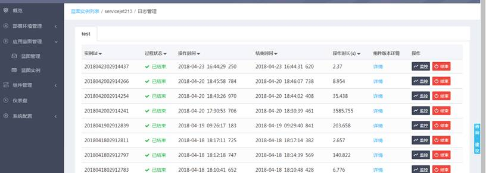

点击蓝图实例列表页的操作按钮，选择日志管理，可以查看当前蓝图实例已执行过的过程监控。

点击选择某一个过程名称，可以查看到该过程已执行过的每一次的监控信息（实例id、过程状态、操作时间、结束时间等）。如果过程未结束，点击“结束”按钮可以强制结束过程。点击“监控”按钮可以查看详细的监控图示。如下图所示。
左侧展开的是各级步骤的监控树，点击每一个步骤，右侧都会显示出该步骤所在的过程图。点击“查看日志”按钮还可以查看当前步骤执行的详细日志。
如果执行过程中，某一步骤出错了，那么就会显示成红色，点击错误步骤的时候 页面右侧在“查看日志”按钮旁边会有一个“干预”按钮。点击干预按钮可以从错误节点处开始继续执行过程。如下图所示。